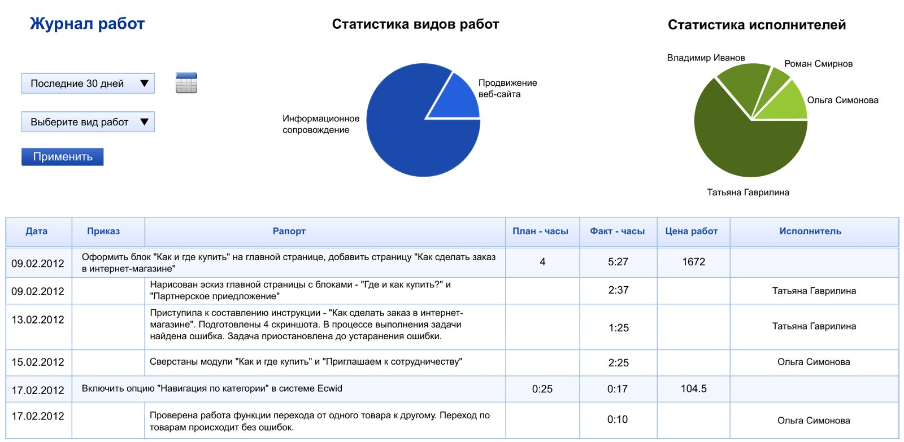
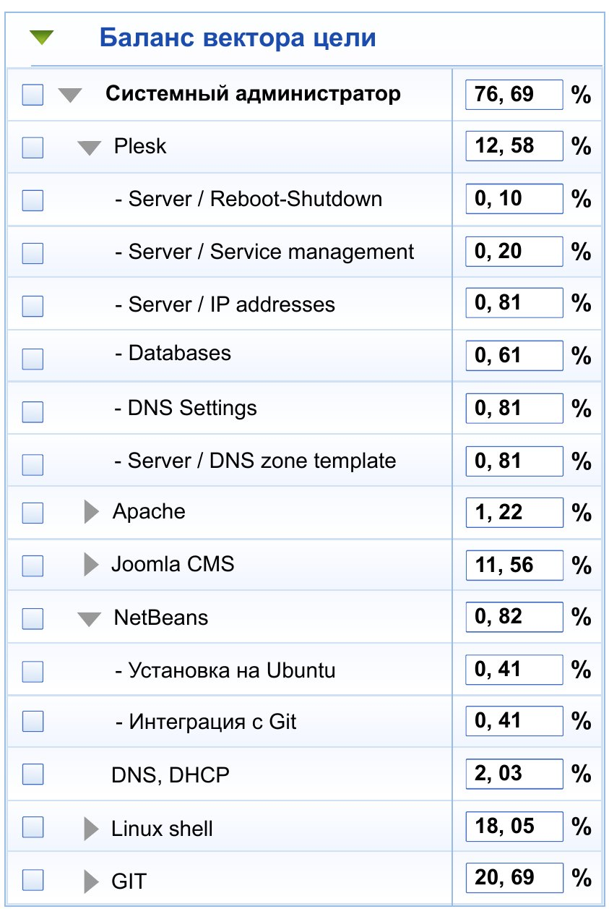

TeamTime BPM
노동은 돈이 아닌 시간으로 측정됩니다. 프로세스, 과업, 보고를 하나의 시스템에서 — 리더는 팀의 실제 업무를 보고, 모든 직원은 자신의 기여와 성장을 봅니다.
max(R) = max(D)
최대한의 존중과 최대한의 요구 —
도구로 구현한 A.S. 마카렌코 모델
TeamTime이 만들어진 이유
TeamTime은 ‘시장을 위해’ 만들어진 것이 아닙니다. 작은 팀 리더의 필요에서 출발했습니다. 실제로 무엇이 이루어졌는지 보고, 각자의 노동을 공정하게 평가하며, 통제에 파묻히지 않는 것.
해결하려던 문제
- 업무가 보이지 않는다. 작업 관리 도구는 과업이 종료되었다는 것만 보여 줄 뿐, 얼마나 많은 노동이 들어갔는지, 일이 어떻게 진행되었는지는 보여 주지 않습니다.
- 돈은 나쁜 척도다. 단가는 제각각이고 가격은 변합니다. ‘이 일의 가치는 얼마인가’라는 대화는 금세 성과에 대한 논의가 아니라 흥정이 됩니다.
- 통제가 리더를 잡아먹는다. 시스템이 없으면 책임자는 모든 사람에게 직접 물어봐야 하고 — 시간도 잃고 신뢰도 무너집니다.
- 회계 시스템은 소기업에 너무 무겁다. 작업 완료 확인서를 발행하고 급여를 계산하는 데 별도의 회계 패키지가 필요해서는 안 됩니다.
웹 스튜디오 ‘Media Publish’
팀은 ‘존중 + 요구’ 원칙으로 일합니다. 각자의 업무 — 과업, 보고, 시간 — 를 기록해야 할 필요가 생깁니다.
TeamTime 첫 버전
기록, 캘린더, BPM 프로세스 편집기, 커리어, 서식, 고객 포털. 시스템이 스튜디오의 핵심 도구가 됩니다.
개인사업자 A.N. 가브릴류크
TeamTime BPM은 오늘날까지 프로젝트 관리 도구로 계속 사용되고 있습니다.
분산 R&D 팀
작동하는 TeamTime BPM 프로토타입이 ‘로스토프 전자 공장’ 유한회사의 원격 임베디드 소프트웨어 팀 업무를 관리합니다.
새 판
개념이 마카렌코 모델의 도구로 정리되고, 로봇과 AI 에이전트가 수행자로 프로세스에 참여합니다.
돈이 아니라 시간 — 유용한 노동의 등가물
TeamTime에서 업무의 척도는 확인된 유용한 노동 1시간입니다. 돈은 파생된 값입니다. 시간에서 계산되며, 그 반대가 아닙니다.
모두에게 똑같이 명확하다
업무 1시간은 책임자도, 엔지니어도, 고객도 이해합니다. 시간은 미리 합의하고, 계획과 비교하고, 흥정 없이 논의할 수 있습니다.
가치가 떨어지지 않는다
가격과 환율은 변해도 노동 1시간은 1시간입니다. 직원이 쌓은 경험은 시간으로 표현되어 오랫동안 의미를 유지합니다.
유용한 노동만 계산된다
보고와 승인된 결과가 뒷받침될 때에만 시간이 인정됩니다. 시스템에 ‘그냥 있는 것’은 급여로 바뀌지 않습니다.
직종 간 비교가 가능하다
프로그래머, 디자이너, 관리자가 같은 척도로 일합니다. 자격 차이는 다른 계산 논리가 아니라 시간당 단가에 반영됩니다.
사람과 함께 성장한다
전문 분야에서 확인된 시간이 곧 실제 경험입니다. 경험을 쌓으면 시간당 단가가 더 높은 다음 등급으로 올라갑니다.
정직한 경제성
프로젝트와 프로세스의 원가는 ‘눈대중’이 아니라 실제 시간(활동기준원가, Activity Based Costing)으로 계산됩니다.
TeamTime의 작동 방식
시스템을 떠받치는 다섯 가지 원칙. 스크린샷은 첫 번째 러시아어 버전 인터페이스이며, 그 뒤의 논리는 바뀌지 않았습니다.
시간 기록과 보고
직원이 과업을 열고 ‘시작’을 누르면 타이머가 돌아갑니다. 끝나면 짧은 보고를 씁니다. 무엇을 했는지, 결과는 무엇인지, 시간이 얼마나 걸렸는지.
- 보고는 하루의 핵심 문서입니다. 짧게, 요점만, 시간과 함께.
- ‘우리는 지금 무엇을 하고 있나?’ 피드가 팀의 보고를 실시간으로 보여 줍니다.
- 모든 과업, 프로젝트, 직원별로 계획 / 실제 시간을 볼 수 있습니다.
- 리더는 캐묻기가 아니라 보고로 관리합니다.

프로세스, 프로젝트, 과업 — 계획과 기록의 기본 단위
반복되는 업무는 한 번 프로세스로 기술한 뒤 템플릿 카탈로그에서 실행합니다. 모든 과업은 기술 명세처럼 작성됩니다. 무엇이 주어졌고, 무엇이 요구되며, 어떻게 하는가. 시스템에는 모호한 지시가 없습니다.


필요한 정보를, 필요한 때에, 필요한 사람에게
프로세스가 스스로 업무를 다음 단계로 넘깁니다. 한 참여자가 보고를 제출하면 다음 참여자가 지침과 입력 데이터가 담긴 자신의 과업을 받습니다.
- 직원은 자신의 과업과 자신이 참여하는 프로세스만 보며, 주간 업무 계획을 받습니다.
- 리더는 프로젝트, 업무 유형, 사람별 보고와 요약을 받습니다.
- 고객은 자신의 포털(C-Report)에서 진행 상황, 보고, 계획 / 실제 시간을 봅니다.

프로세스의 투명성
TeamTime의 프로세스는 폴더 속 규정이 아니라 살아 있는 다이어그램입니다. 각 단계의 수행자가 누구인지, 지금 업무가 어디에 있는지, 몇 시간이 계획되고 쓰였는지 다이어그램에서 보입니다.
- 단순화한 BPMN 표기법 — 교육 없이도 이해되는 10가지 표준 요소.
- 실제 시간에 기반한 프로세스 원가 분석.
- 어느 단계에서 어려움이나 오류가 생겼는지 바로 보입니다.
- 완료된 프로세스 아카이브 — 업무가 실제로 어떻게 이루어졌는지의 기록.

로봇과 AI를 위한 과업도 프로세스의 일부
TeamTime의 과업 형식 — ‘주어진 것 · 요구 사항 · 지침’ — 은 사실상 AI 에이전트를 위한 완성된 과업 설명입니다. 그래서 로봇은 프로세스의 또 다른 참여자가 됩니다. 다이어그램에 자신의 레인이 있고, 자신의 과업과 보고가 있습니다.
- 반복적인 단계(데이터 수집, 문서 초안, 점검)는 에이전트가 수행합니다.
- 에이전트도 사람과 같은 형식으로 보고를 제출하므로 업무는 투명하게 유지됩니다.
- 결정과 품질 관리는 사람이 맡습니다.
- 자동화로 직원의 시간이 얼마나 절약되었는지 보입니다.
소프트웨어 모듈
모듈은 직원, 프로젝트, 과업에 대한 공통 데이터를 사용합니다. 단계적으로 도입할 수 있습니다. 기록부터 시작해 필요에 따라 나머지를 추가하세요.
TeamTime 기록
시스템의 핵심: 직원, 프로젝트, 업무 유형, 과업과 보고, 종합 보고서.
직원 포털
- 과업 수행 타이머.
- 기술 명세 형태의 과업 내용.
- 보고 입력; 상태, 긴급도, 프로젝트별 과업 필터.
리더 포털
- 프로젝트, 업무 유형, 직원별 시간 및 비용.
- 직원 보고와 기간별 종합 보고서.
고객 포털 (C-Report)
- 프로젝트별 작업 일지, 보고, 계획 / 실제 시간.
- 중간 결과물, 자료, 지침.

TeamTime Calendar
팀의 과업 캘린더: 누가, 무엇을, 언제 하는가.
- 월 / 주 / 일 보기, 마우스로 과업 이동.
- 직원, 프로젝트, 업무 유형, 프로세스별 필터.
- 하위 과업과 이를 반영한 계획 / 실제 시간 관리.
- 반복 과업: 매일, 매주, 매월, 매년.
- 모든 직원에게 주간 업무 계획을 이메일로 발송.

TeamTime BPM
다이어그램이 곧 과업 구성이자 실행 흐름이 되는 비즈니스 프로세스 편집기.
- 10가지 표준 요소로 된 단순화한 BPMN 표기법.
- 다이어그램의 모든 동작은 수행자, 계획 시간, 지침을 가진 과업입니다.
- 프로세스 실행: 과업이 한 수행자에서 다음 수행자로 자동 전달됩니다.
- 원가 분석(ABC), 템플릿 카탈로그, 아카이브, 활동 영역.
- 단계의 수행자는 사람, 로봇 또는 AI 에이전트일 수 있습니다.
TeamTime 커리어
전문 분야별 실제 경험 기록과 모든 직원을 위한 성장 프로그램.
- 목표 벡터. 채용 시 리더와 직원이 함께 회사의 목표와 맞물린 직업적 목표를 정합니다.
- 실제 경험. 과업에서 확인된 시간이 기술과 전문 분야별로 자동 누적됩니다.
- 등급과 시간당 단가. 인턴부터 리더까지 투명한 보수 체계. 확인된 시간에 따라 등급이 오릅니다.
- 재교육. 개인 학습 경로: BPMN 프로세스로 된 교육 과정, 보고가 포함된 학습 과업, 마지막의 역량 평가표.


TeamTime 서식
템플릿으로 문서 생성 — 시스템에 이미 있는 데이터, 즉 프로세스, 보고, 고객 정보, 직원 정보를 활용합니다.
- 고객용: 견적서, 작업 완료 확인서, 청구서, 표준 계약서.
- 직원용: 계약서, 현금 지급 전표, 급여 계산.
- 잠재 고객용: 프로세스를 바탕으로 만든 웹사이트의 온라인 서비스 계산기.
- 변수가 있는 사용자 정의 템플릿.


TeamTime — 집단 운영을 위한 마카렌코 모델의 도구
A.S. 마카렌코 모델은 리더의 개인적 자질이 아니라 집단의 구조에 기반합니다. TeamTime은 이 구조를 일상의 실천으로 만듭니다. 모델의 모든 원칙에 시스템 안의 구체적인 장치가 있습니다.
max(R) = max(D)
사람에게 높은 요구를 하는 것은 그를 존중한다는 표현이며, 요구 없는 존중은 무관심을 뜻합니다. TeamTime에서 요구와 존중은 하나의 행동입니다. 명확하게 부여된 과업과 정직하게 계산된 노동.
| 모델의 원칙 | TeamTime의 구현 방식 |
|---|---|
| 최대한의 요구 | 모든 과업은 계획 시간이 있는 ‘주어진 것 · 요구 사항 · 지침’입니다. 결과는 품질 관리를 거치며, 확인된 노동만 인정됩니다. |
| 최대한의 존중 | 마이크로매니지먼트가 없습니다. 리더는 보고로 업무를 봅니다. 보수는 예측 가능하며 시간으로 계산되고, 각자의 기여가 팀 전체에 보입니다. |
| 지휘관의 보고코뮌에서는 — 매일 | 직원의 일일 보고: 짧게, 근거를 들어, 시간과 함께. 캐묻기 대신 ‘우리는 지금 무엇을 하고 있나?’ 피드. |
| 도구로서의 집단 | 프로세스가 사람을 잇습니다. 한 사람의 결과가 다른 사람의 입력이 됩니다. 공동 작업 일지가 팀이 스스로를 볼 수 있게 합니다. |
| 전망선 | 커리어 모듈의 목표 벡터: 가까운 전망은 다음 등급, 먼 전망은 새로운 전문 분야입니다. |
| 병행 작용 | 리더는 한 사람 한 사람이 아니라 일하는 방식 — 프로세스와 템플릿 — 을 관리합니다. |
| 생산적 노동과 학습 | 학습 과업도 보고와 시간이 있는 일반 프로세스 과업이며, 개인 학습 경로도 같은 시스템에서 진행됩니다. |
| 전통 | 프로세스 템플릿 카탈로그는 ‘우리가 일하는 방식’을 보존하고 새 직원에게 전합니다. |
모델에 대해 더 알아보기
콜로니와 코뮌의 역사, 집단 작업 규정, 2008년부터의 적용 경험도입 방식
두 방식 모두 기능은 같습니다. 차이는 데이터가 어디에 저장되고 누가 서버를 관리하느냐입니다.
SaaS
클라우드 호스팅의 TeamTime
- 서버와 관리자 없이 바로 시작할 수 있습니다.
- 업데이트, 백업, 기술 지원은 개발자가 맡습니다.
- 직원, 리더, 고객이 어디서나 브라우저로 접속합니다.
- 분산·원격 팀에 편리합니다.
적합 대상: 소기업, 스튜디오, 프로젝트 팀, 원격 팀.
Personal server
기업 내부망에 설치
- 업무, 사람, 프로세스에 관한 데이터가 기업 경계를 벗어나지 않습니다.
- 고객 서버에 설치하며, 폐쇄망에서 운영합니다.
- 내부 시스템 및 자체 AI 에이전트와 연동.
- 기업 규정에 맞춘 프로세스·문서 템플릿 설정.
적합 대상: 제조 기업, R&D 부서, 정보 보안 요건이 있는 조직.
도입 상담
작동하는 프로토타입을 보여 드리고, 원격 팀 운영 경험을 나누며, 도입 방식 선택을 도와드립니다.